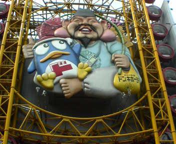

日々、想ふ
〜過去感じたことがつれづれと〜
（できるだけ最大化してお読みください）
日々、想ふ
今日は９時間労働でした。５/１５
しんどいっ！寝るっ！タケユキでした。
今日の就寝時間：３時半。
ただただ焦るだけ。５/１４
| やらないと |
| いけないことだと |
| わかるのに、 |
| そう思うだけ、 |
| ただ思うだけ。 |
タケユキ心の短歌
忘れたころに侵す過ち。５/１３
今日は金曜日！今週も乗り切った！タケユキです。
と思って気分新たに洗濯でもしてみたら
ティッシュを一緒に洗濯機にかけてしまい
泣きそうになった今日はちょっと授業さぼって
軽くツーリングに行ってきたら、
交差点付近で坂道発進に失敗して
後ろの車に２回も体当たりしてた
風変わりな車を見かけました。
変な車もいるもんですな、春であったかくなってきたからかな。
今日のバイク：公道デビューが二人乗りて。
平日。５/１２
昨日マフラー換えたいって話を書いたんだけど
「そんなに欲しいならひとつくらい買ってあげるよ」って言ってもらえました。
気持ちはうれしいんですが俺が欲しいのは
バイクのマフラーであって首に巻きつける方のマフラーではありません、
勘違いしないでくださいそれに季節はずれですよ、タケユキです。
今日は学校行って、夜バイト行って。
一日おしまいです。
明日行ったら週末、がんばるべし。
今日の一日：特に大きな出来事もなく
スーパーサウンドマフラーかSS300チタンマフラーかどっちか。５/１１
今日は夜遅くまでバイトしてました、タケユキです。
うちの店は２１：００ラストオーダー、２２：００閉店のレストランなんだけど、
今日は特別に１０時から５０名前後で宴会が入ってた。
宴会ってのはだいたい２時間ぐらいだから
片付けとかやってたら終電過ぎるのは確実だってことで
終電とかに関係ない人が残って仕事してました。
仕事が終わって０時半。
それから俺は調理場の人をバイクの後ろに乗せて岐路へ。
梅田から帰るときは御堂筋→中央環状線のルートで帰ってるんだけど
調理場の人が豊中の人だったんで梅田から１７６を快走。
無事事故ることなく駅まで送って帰ってきたんだけど
マフラーの音がさみしいことこの上なしなんで
早いとこマフラー交換しようと思った一日でした。
今日の学校：俺はレポートがんばった。
今日は午後しか授業ないのに。５/１０
ちゃんと学校には行ったんだけど、タケユキです。
火曜日ってのは午後から授業がある日で
昨日も７時間は寝てたはずなのに
教室でずっと寝てた。
何しに行ったんだろ、俺は。
今日の分かってはいるんだけど：「明日からがんばる」ではなくて、
大事なのは「今からがんばる」。
実は隠れファンでした。５/９
中村獅童と竹内結子が結婚を前提に交際中みたいですね、
というわけで今日の日記はお休みします、タケユキです。
今日の内P：大阪では深夜１：２６から放送。
ジェットコースターとか乗らない人です。５/８
今日は難波まで走ってきました、タケユキです。
ちょっと前にオープンしたドンキホーテ道頓堀店に行ってきました。

デジカメ持っていくの忘れててケータイのカメラで撮ったせいか
全体を撮影することができなかったのがちょっと残念。
このドンキホーテには他にはない楕円形の観覧車があります。
今日この観覧車乗ってみたんだけど、これ動きが怖い。
普通の観覧車ってのは円形で回転もスムーズなのに
この観覧車の軌道は楕円で、
観覧車って言うよりは遊園地のアトラクションのような動き。
しかも平行移動してる時はまだいいんだけど
カーブにさしかかると、
・・ガタッ・・ガタッ・・ってなんか変な揺れが起こる。
目の前は真緑ににごった道頓堀。
落ちたらどないすんねってくらいの高さに上る観覧車。
なんとか生きて帰れたけど、
俺はこれは道頓堀の名物にならなくていいと思います。
今日の観覧車の入場料金：２人だと２人で１２００円。一人だと一人で１０００円。
キャバクラとか行ったらこんなんなのかなって思った。５/７
昨日はバイト終わってからバイトの人達で飲みに行きました、タケユキです。
うちのバイト先は別に仲が悪いってことはないんだけど
仕事が終わるのがけっこう遅かったりするんで
仕事後にどこか行くってことはあんまりなかったりします。
そういう意味もあってかなり楽しい飲み会でした。
俺はバイクで行ってたから
オレンジジュースやジンジャーエールばっか飲んでたけど。
それにしても楽しかった。
別に隣に座った子がかわいい子だったからとかって理由じゃ決してないと思う。
隣に座ったその子が
「今日タケユキさんのおごりですよね〜☆」
「タケユキさんデザート頼んでもいいですか？ごちそうさまです〜♪」
かわいいって罪だと思う。
今日の飲み会：まあみんなで割り勘だったんだけど。
最近書くことがありません。５/６
今日学校行って明日はまた休み、
なんか勉強してる感がありません、タケユキです。
てなわけでまた明日も休みなんで
とりあえず梅酒飲んでます。
さ〜らりとした、梅酒、です（チョーヤのです）。
それではおやすみなさい。
今日の日記：最近刺激のある事件がないんですよね。
明日は学校。５/５
賞味期限がせまっているため今日一日だけで３つ卵食べました、
そのせいか今腹痛に襲われすごく後悔、タケユキです。
この腹痛がなかなかおさまらんくて
ここ数時間トイレと居間を行ったり来たり、すでに数往復。
峠が過ぎて一安心した時にはすでに日付が変わってた。
おい、こんなんでいいのか、GW最後の夜。
今日の飲み物：まだ黒酢はちゃんと飲んでますよ。
前振りのが長いです。５/４
連休中なんだけど勉強してます、英語の勉強やってます。
専門系の内容について書かれた洋書（って言うの？）で
ところどころ分からない単語が出てきますが
読んだ内容を授業中にみんなに説明しないといけないので
久しぶりに辞書を使いながら英文を読んでいます。
んでもまあ専門系の内容なもんで単語の意味が分かっても
その文章の意味を理解することができないんですが。
というか今読んでるこの洋書、
学校の図書館に和訳された本があるって噂なんですけど、
借りようか迷ったけど自力で読み進める俺超がんばってる、タケユキです。
部屋にハンモックかけました。
主に服置いたりするのに使うつもりで
そこに寝るつもりはないんだけど。
今日の出来事はそんくらいですか。
今日の買い物：５０００円は高いよな・・。
久しぶりに想ひ出追加。５/３
大阪に戻ってきましたよ、タケユキです。
大阪−広島往復〜帰省という名のツーリング〜をアップしました。
初めての長距離ツーリングだったけど無事到着したことをここに報告します。
今日の疲れ：かなり肩とおしりが痛い。